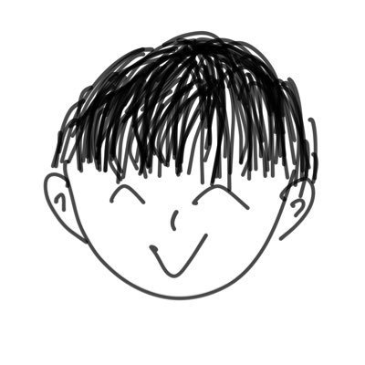

灘藍

一言
機械いじりが少し得意です
プロフィール
灘藍（なだらん）
茨城県在住
Web開発
できること・得意なこと
VS Code、Githubなどのツールの基礎的な操作
簡単なHTMLの作成
他者との協調
好きなもの・こと
ポケモン 一番好きなのはヌメルゴン
VALORANT 最近は観戦ばっかり
音ゲー スマホ音ゲーもAC音ゲーもどっちもやってる
東方Project 原作はノーマルシューター 好きなキャラは二ッ岩マミゾウ
作ったもの
あなたのいいところ診断
SNS
X(旧 Twitter)
メインはこちら
misskey.io
たまに動かします
経歴
2025 年
S高等学校
卒業
ZEN大学
入学
好きな曲
Open Processing